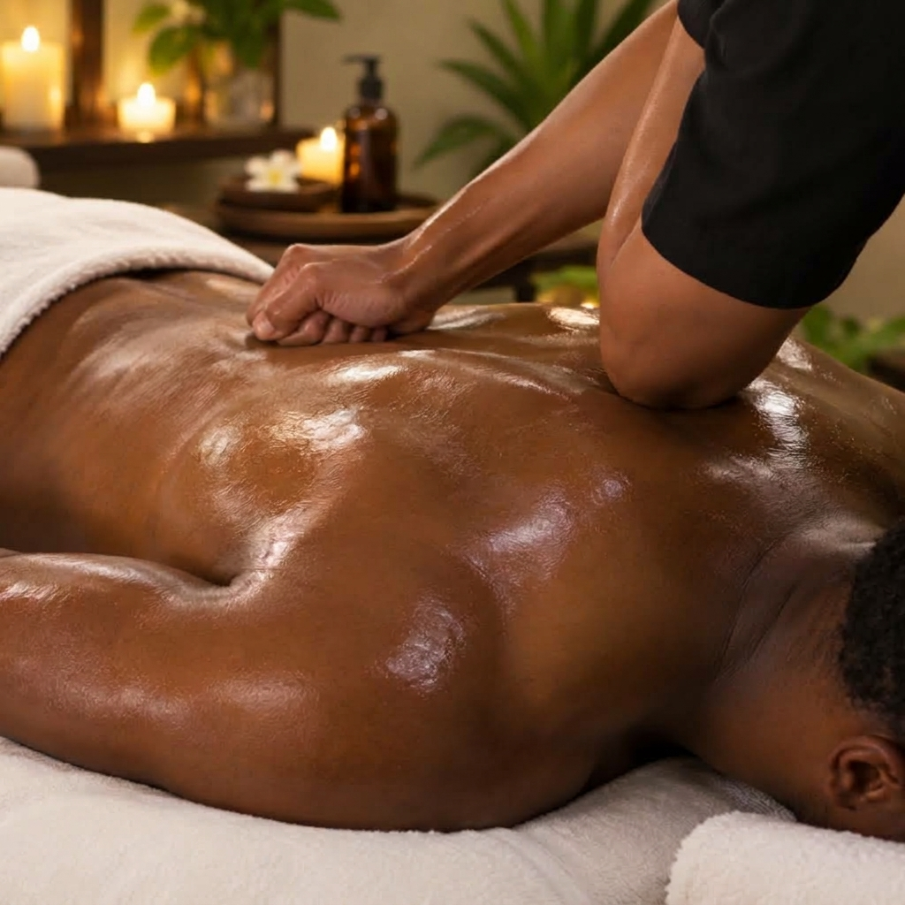
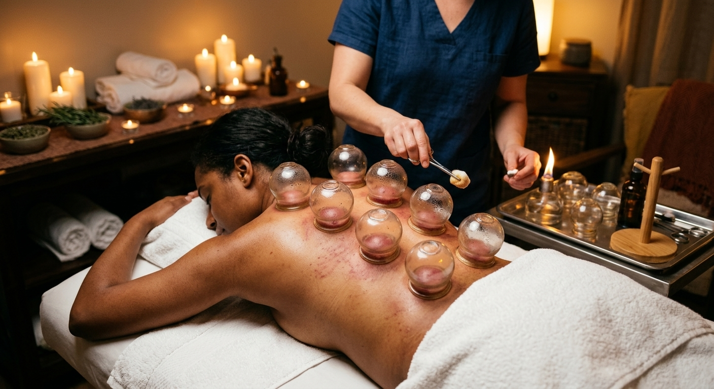

|
|
|
|
Back Pain Relief
Back pain, treated
at the source.
If your back keeps tightening, aching or flaring up no matter how many times you stretch, rest or book a massage, it may be time for a different approach. StressKnotRx pairs clinical therapeutic massage with acupuncture and advanced bodywork, all built around what your back actually needs.
|
|
Book a Back Pain Session
|
|
Why It Keeps Returning
Relief that fades is a sign
the cause was never reached.
|
 |
| 01 |
Protective guarding.
Muscles can stay braced long after the original strain, keeping the area tight and tender. |
| 02 |
Referred tension.
Pain in the low back is often tied to the hips, glutes or mid-back, so treating only the sore spot falls short. |
| 03 |
Daily patterns.
Long hours seated, stress and training habits quietly rebuild the tension between sessions. |
|
|
Your Personalized Plan
A session designed
around your back.
Depending on what is appropriate for you, your practitioner may combine the following.
|

Cupping
Used to ease stubborn tightness along the back, where appropriate. |
| |
Therapeutic Massage · Acupuncture · Trigger Point Work
Stretching · Assisted Mobility · Percussion |
| |
|
| |
Your back has been
asking for more.
Book a session and let your practitioner build a plan around your pain, your priorities and your recovery goals.
|
StressKnotNYC · 240 W 37th St, New York, NY 10018
StressKnotNYC LLC · © 2026 StressKnotNYC. All rights reserved.
Sudden severe pain, numbness, weakness or loss of bladder or bowel control needs urgent medical attention.
You can unsubscribe from these emails here.
|